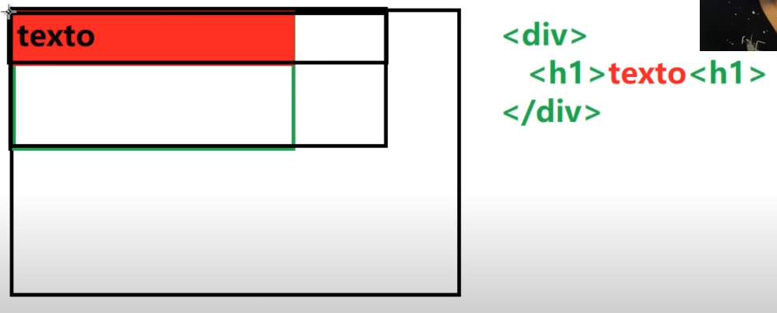

INTRUDUCCIÓN AL HTML
HTML significa El lenguaje de marcas de hipertexto o HyperText Markup Language, El código HTML permite a su autor definir la estructura de una página web y el aspecto que mostrará en un navegador.
Menos técnico significa poner varias "cajitas" para darle forma a la página, luego con CSS le das los tamaños, estilos, posición, etc.

Concepto del Espacio en HTML
Algo que hay que tener presente a la hora de programar es el espacio que ocupa los diferentes:
- Títulos(por ejemplo el h1 / h2 / h3 / h4 / h5 / h6) (Estos título pueden tener ID o Identificación se pone: >h3 id="example">EJEMPLOS >/h3>
Luego con el >a href="#example">EJEMPLO>/a> ). - Etiquetas de Texto(por ejemplo el Italica(i) / Negrita(b) / Tachada(strike) / Subrayada(u))

Pero cuando el >h1< esta dentro de un >div< (que es como una "caja" que divide) el h1 va a ocupar el espacio que divide el div
